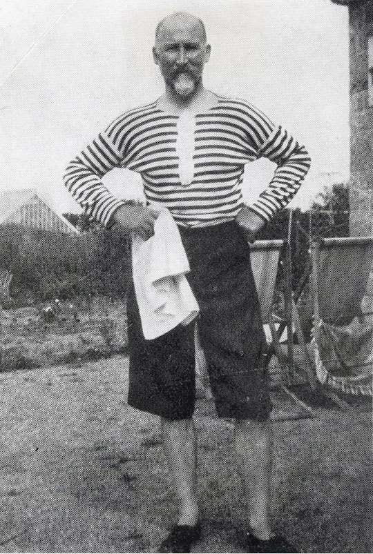
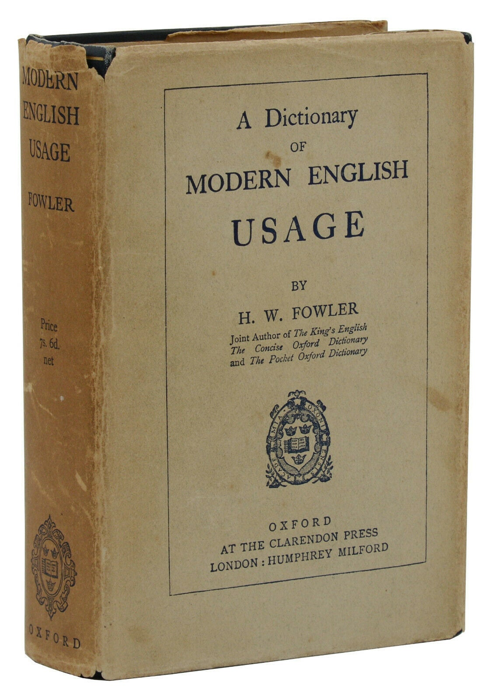

AI Writing Is Not Repetitive Enough
One big defect of AI writing is the use of synonyms to avoid repetition. Claude will call something a ‘threat’ in one sentence and a ‘danger’ in the next. After that, it’ll say ‘risk,’ ‘hazard,’ ‘menace,’ and ‘peril.’ Something first described as an ‘agreement’ will later become a ‘deal,’ then a ‘pact,’ an ‘accord,’ an ‘arrangement,’ and a ‘settlement.’ A ‘claim’ will transform into a ‘contention,’ an ‘assertion,’ a ‘position,’ and then a ‘thesis.’
This habit can be a real problem, issue, challenge, difficulty, obstacle, concern, and complication if you want to understand what Claude is saying. In 1926, the lexicographer H.W. Fowler called the fault “elegant variation,” writing in A Dictionary of Modern English Usage:
It is the second-rate writers, those intent rather on expressing themselves prettily than on conveying their meaning clearly, & still more those whose notions of style are based on a few misleading rules of thumb, that are chiefly open to the allurements of elegant variation.

“The fatal influence,” Fowler says, “is the advice given to young writers never to use the same word twice in a sentence.” These writers are “first terrorised by a misunderstood taboo, next fascinated by a newly discovered ingenuity, and finally addicted to an incurable vice.” In paragraphs blighted by elegant variation, “the writer, far from carelessly repeating a word in a different application, has carefully not repeated it in a similar application; the effect is to set readers wondering what the significance of the change is, only to conclude that there is none.”
In The King’s English, he and his brother F.G. Fowler put it more succinctly: “These elephantine shifts distract our attention from the matter in hand.” In The War Against Cliché, Martin Amis describes elegant variation as “that scurviest of false graces” and a “futile dexterity.”
Fowler’s Dictionary of Modern English Usage is brilliant, by the way. In the entry on elegant variation, he writes: “There are few literary faults so widely prevalent, and this book will not have been written in vain if the present article should heal any sufferer of his infirmity.” After describing the fault, he proceeds to “the main object of this article”: “to nauseate by accumulation of instances.”
